An ELM327 adapter
Any OBD-II adapter that speaks ELM327, over Bluetooth, Bluetooth LE or Wi-Fi. They’re small, cheap and sold everywhere.
Plug a small OBD-II adapter in under the dashboard and the screen in your car becomes a scan tool: fault codes in plain words, live engine gauges and every sensor your car reports.
On your phone? Pick your head unit next to Install.
Works with ELM327 adapters: Bluetooth, Bluetooth LE or Wi-Fi
FreePro
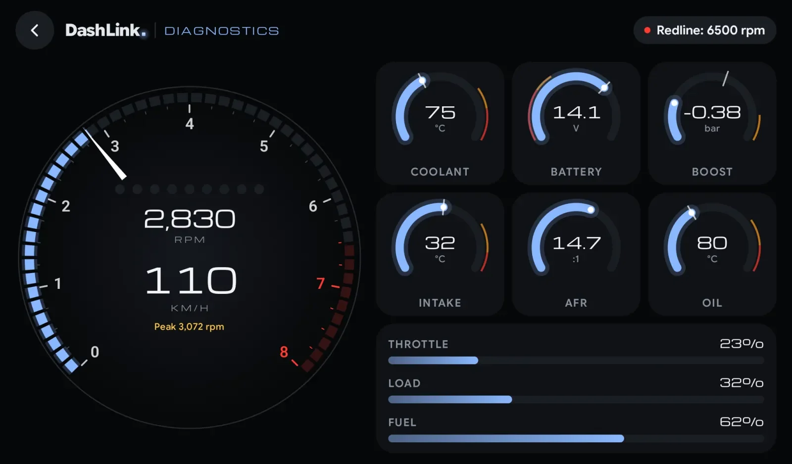
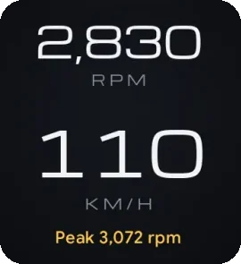
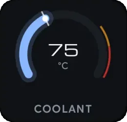
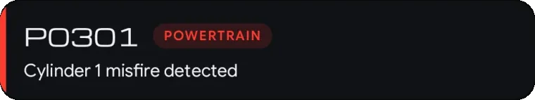
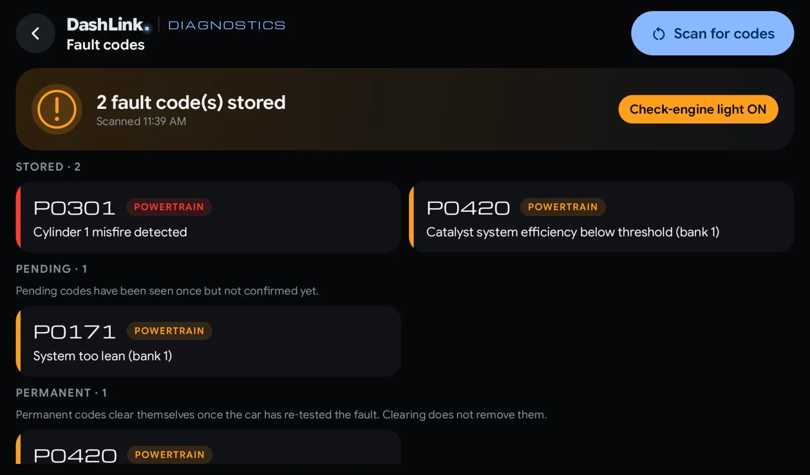
Every car sold since the late nineties has an OBD-II port under the dashboard. Push a small ELM327 adapter into it, switch the ignition on and tap Connect. DashLink guides you through each step with an animation, and lists the likely adapter first.
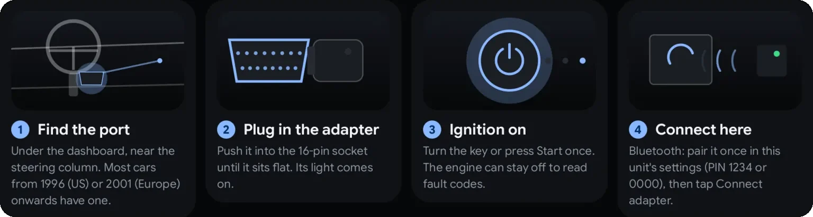
DashLink reads the codes behind the check-engine light and says what each one means in plain words, coloured by how serious it is. Walk into the workshop knowing whether it’s a loose fuel cap or a misfire.
A 54-segment LED tachometer with shift lights from your own redline, live revs and speed, and arc gauges for coolant and battery. Pro adds boost, intake temperature, air-fuel ratio and oil, plus bars for throttle, load and fuel.
Every reading your car reports in one list, each with its own sparkline. Tap one to chart the last 60 seconds with its minimum, average and maximum, or lay a second reading over it to see how they move together.
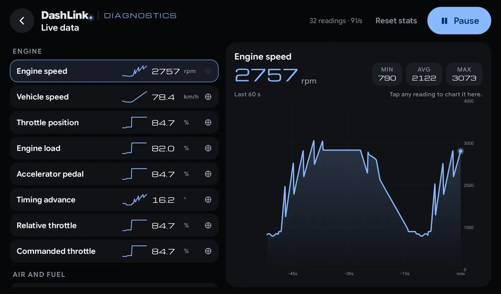
With an adapter plugged in, Dock mode can show five full clusters driven by your engine: revs, temperatures, boost, fuel and fault codes, the way a sports car shows them.
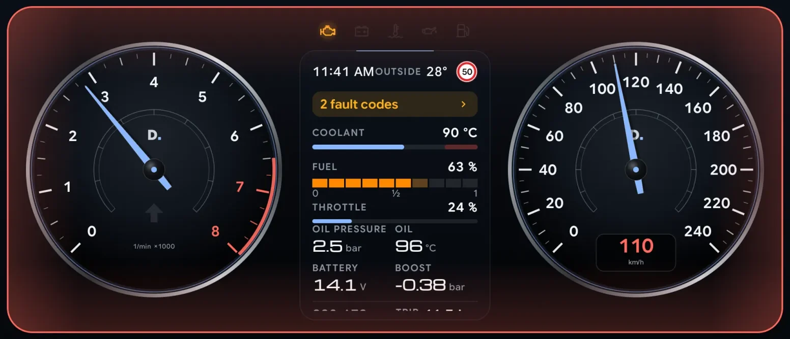
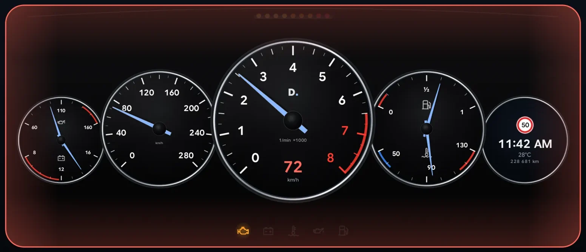
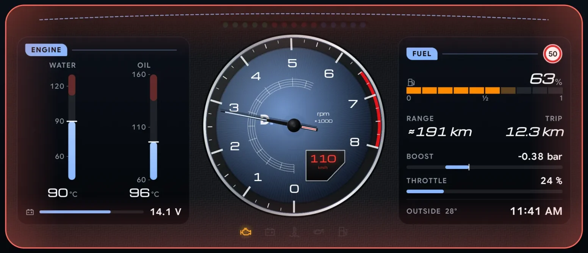
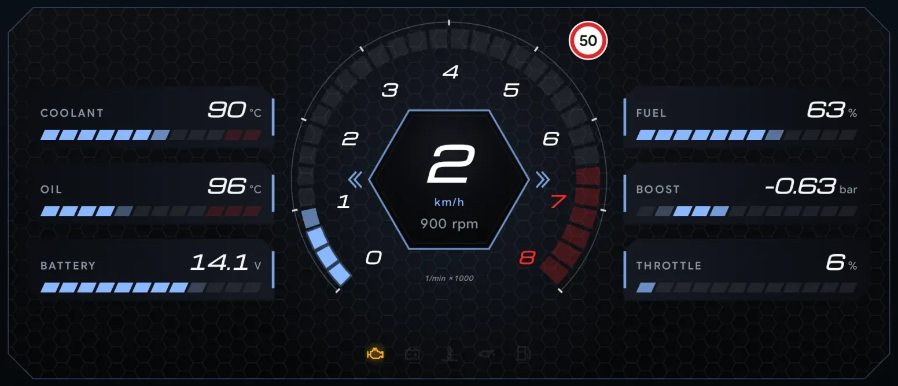
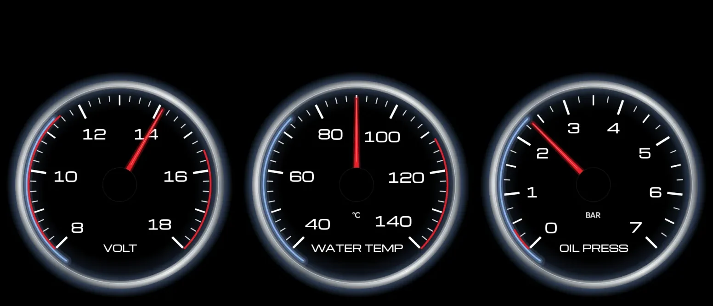
Choose a cluster in Dock style. Without the adapter, the dashboard goes back to your usual layout by itself.
Any OBD-II adapter that speaks ELM327, over Bluetooth, Bluetooth LE or Wi-Fi. They’re small, cheap and sold everywhere.
Under the dashboard, near the steering column. Most cars from 1996 (US) or 2001 (Europe) onwards have one.
Open Diagnostics from the DashLink home screen and tap Connect adapter. No account, nothing to sign up for.
Fault codes and the main gauges stay free. Pro adds live data, clearing codes and the engine clusters. Try all of it free during your trial.
| Feature | Free | Drive | Pro |
|---|---|---|---|
| Dashboard (Dock), trips, fuel, logbook, car care | Included | Included | Included |
| Speedometers: Digital, Chrono, Minimal | Included | Included | Included |
| Performance tests: 0–100, braking, 80–120, dyno, stats | Included | Included | Included |
| Bluetooth music on the dashboard | Included | Included | Included |
| Diagnostics: fault codes in plain words and engine gauges (with an OBD-II adapter) | Included | Included | Included |
| Android Auto (USB, wireless, self mode) and auto-start | Not included | Included | Included |
| DashLink Racing: track day, rally, recce + pace notes, regularity (TSD), saved-track sessions, coach, session analysis | Not included | Not included | Included |
| Premium speedometers: Corsa, Sport, Hyper | Not included | Not included | Included |
| Diagnostics Pro: live data for every sensor, boost, AFR and oil gauges, pending codes, freeze frame, clearing codes, engine clusters | Not included | Not included | Included |
| Theme presets (all except Signature) and accent colours | Not included | Not included | Included |
| Home-screen widgets, steering-wheel key mapping, phone sensors | Not included | Not included | Included |
Every feature is unlocked during your free trial.
An ELM327 OBD-II adapter (Bluetooth, Bluetooth LE or Wi-Fi) plugged into your car’s diagnostic port, and DashLink on your head unit. For a Bluetooth adapter, pair it once in the head unit’s Bluetooth settings (the PIN is usually 1234 or 0000).
Reading stored fault codes, the check-engine light and the main gauges is free. Live data, pending and permanent codes, freeze frame, clearing codes, the boost, intake, air-fuel and oil gauges and the engine clusters are in Pro. Try everything free during your trial.
With Pro, yes. DashLink only clears codes with the engine off and warns you first: clearing also resets the car’s readiness monitors, so an emissions test straight afterwards may fail. If the fault is still there, the light comes back.
Cars report different sets of sensors. A reading your car doesn’t report shows a dash, never a made-up zero.
No. A fault code tells you where to look and how urgent it is, so you can decide what to do and talk to your garage knowing what’s wrong.
Many people do. Some adapters draw a little power with the car off, so unplug it if the car will be parked for a long time.
Read your fault codes free. Try live data and the engine clusters free now.